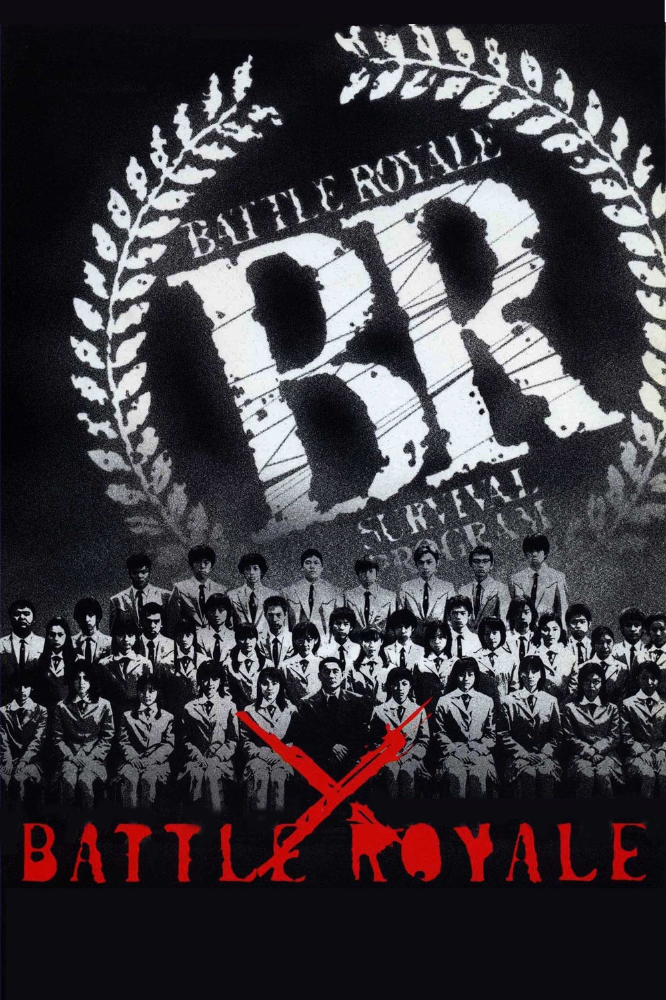
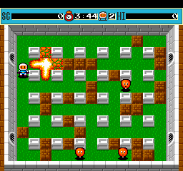
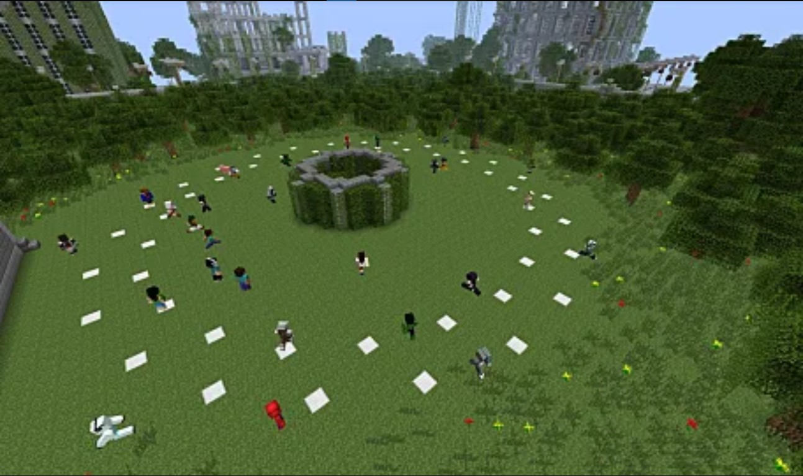
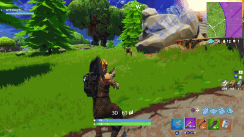
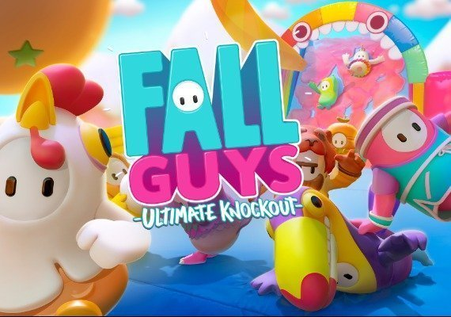

Battle Royale
Introduction
|  |
| Fun for all the family. |
Battle royale games are a genre of online multiplayer video games that blends the elements of a survival game like exploration, scavenging and survival with last-man-standing gameplay. Battle royale games can have any amount of players from a few dozens to a hundred. Typically, all players start with minimal, or no equipment and have to scavenge and loot to improve their equipment. The goal is to eliminate all other players while trying to avoid being killed by other players or elements of the map, such as the ever-shrinking "safe area". The winner is the last player or team alive.
The name for the genre is taken from the 2000 Japanese film Battle Royale.
History
Elements of the Battle Royale genre have been present in video games for quite a while.
|  |
| Bomberman 1990. |
In 1990's Bomberman, players would start with the same abilities and could pick up new items throughout the round to become stronger. The game would end when only one player was left.
The release of Battle Royale, the 2000 Japanese movie based on a novel with the same name, is the one to have really set the benchmark for the battle royale genre.
The main concepts behind of battle royale game can be found within this film:
The characters are on an island, and only one of them may leave.
They have nothing on them.
The students are then set loose on the island and they start killing each other.
Around the island, they may find hidden weapons which increases their chances of surviving.
The Battle Royale ultimately ends with only one student alive, who gets to leave the island.
Early mods and games (2012–2016)
After being quite popular in Japan, the battle royale concept made it's may to the US, in the form of The Hunger Games franchise.
Not long after the release of the first The Hunger Games film in 2012, a server plug-in was created, called Hunger Games (said server was later renamed Survival Games) was for Minecraft.
Survival Games took inspiration from the film (obviously).
It's worth mentioning that while Hunger Games is very similar to Battle Royale, they differ in the way they deal with weapons.
Whereas Battle Royale has them scattered around the map, Hunger Games has a main weapons stash in the middle of the map.
Like in Battle Royale, the dead stay dead and the winner is the last man standing.
|  |  |
| The world's greatest crossover. | A battle royale mod for the ARMA2 mod, DayZ. |
This was the first of many battle royale mods. One of the more popular mods was one created by Brendan Greene for DayZ (a mod for ARMA 2 itself). Going by PlayerUnknown, Greene decided to stick more closely to the Battle Royale formula of having weapons scattered around the map, to add to the chaos and unpredictability. After briefly working as a consultant for H1Z1: King of the Kill before joining forces with Bluehole to develop a standalone battle royale game. Said game would later be released as PlayerUnknown's Battlegrounds.
Formation of standalone games (2017–2018)
So the formative elements of the battle royale genre existed well before PUBG was released, but the genre was mainly defined by the two principal titles through 2017 and 2018: PlayerUnknown's Battlegrounds and Fortnite Battle Royale. Both games attracted tens of millions of players in no time, and made them both commercial successes.
 |
 |
| PlayerUnkown's Battlegrounds. | Fortnite. |
As previously mentioned PlayerUnknown's Battlegrounds was created by Brendan Greene, and its title is based on his online alias "PlayerUnknown". Fortnite on the other hand had been released previously, as a cooperative survival game, but it was only early access. Seeing the potential of battle royale, they decided to implement their own version. In 2018, Fortnite Battle Royale was rivaling Battlegrounds in player numbers and had surpassed it in revenue. This is attributed to the fact it's free-to-play and supports cross-platform.
Mainstream popularity (2018–present)
After the game's impressive performance on the market, many other games followed with battle royale mechanics. Both Activision and EA included a battle royale mode in their new releases (Call of Duty: Black Ops 4 and Battlefield V respectively). Many other previously released games also added battle royale-inspired game modes in updates, such as Grand Theft Auto Online, Paladins, Dota 2, Battlerite, and Counter-Strike: Global Offensive. In February 2019, EA released the free-to-play Apex Legends.
The battle royale concept has also been used in games that aren't shooter games.
Tetris 99 has 99 players playing Tetris simultaneously, with the goal being to remain the last player standing.
 |
 |
| Fall Guys gameplay. | Much better for the kids. |
The barrage of clones has since slowed down a bit. And with games like Fall Guys, where the battle royale genre is mixed in with the platformer genre, we can see that companies have started to be more creative, which will undoubtedly help battle royale stay around for longer.